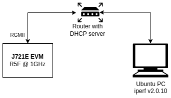

1. J721E Datasheet¶
1.1. Introduction¶
This section provides the performance numbers of device drivers supported in PDK
1.1.1. Setup Details¶
SOC Details |
Values |
|---|---|
Core |
R5F |
Core Operating Speed |
1GHz |
DDR Speed |
4266 MTs |
Cache status |
Enabled |
Optimization Details |
Values |
|---|---|
Profile |
Release |
Compile Options for R5F |
-g -ms -DMAKEFILE_BUILD -c -qq -pdsw225 –endian=little -mv7R5 –abi=eabi -eo.oer5f -ea.ser5f –symdebug:dwarf –embed_inline_assembly –float_support=vfpv3d16 –emit_warnings_as_errors |
Linker Options for R5F |
–emit_warnings_as_errors -w -q -u _c_int00 -c -mv7R5 –diag_suppress=10063 -x –zero_init=on |
Code Placement |
DDR |
Data Placement |
DDR |
1.1.2. Software Performance Numbers¶
1.1.2.1. DSS¶
Display Type |
Configuration |
CPU Load |
|---|---|---|
HDMI |
1080P60 RGB888 |
1.0% (MCU2_0) |
DP |
1080P60 BGRA32 |
1.0% (MCU2_0) |
1.1.2.2. CSI-Rx¶
Capture Type |
Configuration |
CPU Load |
|---|---|---|
CSI2Rx Inst 0 |
4CH 1080P30 IMX390 Sensor Raw12 |
1.2% (MCU2_0) |
Instance |
Configuration |
Time taken to receive one frame |
ISR latency |
|---|---|---|---|
CSI2Rx Inst 0 |
1CH 1080P30 IMX390 Sensor Raw12 |
33.3ms (MCU2_0) |
9us (MCU2_0) |
1.1.2.3. CSI-Tx¶
Instance |
Configuration |
Time taken to Transmit one frame |
ISR latency |
|---|---|---|---|
CSI2Tx Inst 0 |
1CH 1080P 2.5GBPS IMX390 Sensor Raw12 |
6.7ms (MCU2_0) |
21us (MCU2_0) |
1.1.2.4. CPSW_9G¶
1.1.2.4.1. Test Setup¶
Hardware Configuration |
Value |
|---|---|
Processing Core |
Main R5F0 Core 0 |
Core Frequency |
1 GHz |
Ethernet Interface Type |
RGMII at 1Gbps |
Packet buffer memory |
DDR |
Hardware checksum offload |
Yes |
Scatter-gather TX |
Yes |
Scatter-gather RX |
No |
Software Configuration |
Value |
|---|---|
RTOS |
FreeRTOS |
RTOS application |
Enet LLD lwIP example |
TCP/IP stack |
lwIP 2.1.2 |
Host PC tool version |
iperf v2.0.10 |
1.1.2.4.2. TCP Performance¶
Test |
Bandwidth (Mbps) |
CPU Load (%) |
|---|---|---|
TCP RX |
94.7 |
100 |
TCP TX |
73.5 |
100 |
TCP Bidirectional |
RX=35.1 TX=45.3 |
100 |
Host PC commands:
iperf -c <evm_ip> -r
iperf -c <evm_ip> -d
1.1.2.4.3. UDP Performance¶
Test |
Datagram Length = 64B |
Datagram Length = 256B |
Datagram Length = 512B |
Datagram Length = 1470B |
||||||||
|---|---|---|---|---|---|---|---|---|---|---|---|---|
Bandwidth
(Mbps)
|
CPU
Load
(%)
|
Packet
Loss
(%)
|
Bandwidth
(Mbps)
|
CPU
Load
(%)
|
Packet
Loss
(%)
|
Bandwidth
(Mbps)
|
CPU
Load
(%)
|
Packet
Loss
(%)
|
Bandwidth
(Mbps)
|
CPU
Load
(%)
|
Packet
Loss
(%)
|
|
UDP RX |
5.24 |
50 |
0.0 |
26.2 |
74 |
0.0016 |
26.2 |
53 |
0.0 |
26.2 |
39 |
0.0 |
10.5 |
71 |
0.012 |
52.4 |
52.4 |
78 |
0.0021 |
52.4 |
51 |
0.0 |
|||
15.7 |
92 |
0.019 |
105 |
105 |
105 |
73 |
0.0015 |
|||||
UDP RX (Max) |
16.8 |
96 |
0.0045 |
39.8 |
98 |
0.0 |
73.4 |
98 |
0.0069 |
163 |
97 |
0.014 |
UDP TX (Max) |
10.4 |
100 |
0.0 |
25.5 |
100 |
0.0008 |
50.9 |
100 |
0.014 |
145 |
100 |
0.021 |
Host PC commands:
Test with datagram length of 64B:
iperf -c <evm_ip> -u -l64 -b<bw> -r where <bw> is 5M, 10M, 15M, etc
Test with datagram length of 256B:
iperf -c <evm_ip> -u -l256 -b<bw> -r where <bw> is 25M, 50M, 100M, etc
Test with datagram length of 512B:
iperf -c <evm_ip> -u -l512 -b<bw> -r where <bw> is 25M, 50M, 100M, etc
Test with datagram length of 1470B (max):
iperf -c <evm_ip> -u -b<bw> -r where <bw> is 25M, 50M, 100M, etc
1.1.2.5. UDMA¶
1.1.2.5.1. DMA Parameters¶
Ring Order ID: 0
Channel Order ID: 0
Channel DMA Priority: 1
Channel Bus Priority: 4
Channel BUS QOS: 4
Channel TX FIFO depth: 128
Channel Fetch Word Size: 16
Channel Burst Size: 64 bytes for normal channel, 128 bytes for HC and UHC channels
1.1.2.5.2. Test Parameters¶
Type: TR15 Block copy
TR: one TR per TRPD in PBR mode
TR Memory: Same as buffer memory (DDR, MSMC or OCMC depends on the test performed)
Transfer Size: 1 MB read and 1MB write
1MB means 1000x1000 bytes and 1KB means 1000 bytes
Note: Throughput numbers mentioned is the combined memory throughput of both read and write operations
1.1.2.5.3. DRU Blockcopy¶
DRU channel performance with TR submitted through ring
Test Description |
Throughput (MCU2) |
CPU Load (MCU2) |
Throughput (C66x_1/2) |
CPU Load (C66x_1/2) |
Throughput (C7x_1) |
CPU Load (C7x_1) |
|---|---|---|---|---|---|---|
[PDK-3501] 1CH DDR 1MB to DDR 1MB |
11554 MB/sec |
12% |
11956 MB/sec |
4% |
11196 MB/sec |
7% |
[PDK-3502] 1CH MSMC 1KB Circular to DDR 1MB |
18347 MB/sec |
13% |
18477 MB/sec |
6% |
17652 MB/sec |
8% |
[PDK-3503] 1CH DDR 1MB to MSMC circular 1KB |
21355 MB/sec |
15% |
22477 MB/sec |
5% |
20360 MB/sec |
9% |
[PDK-3504] 1CH MSMC 1KB to MSMC circular 1KB (1MB per TR) |
28649 MB/sec |
15% |
28886 MB/sec |
7% |
27200 MB/sec |
9% |
[PDK-3505] Multi CH DDR 1MB to DDR 1MB |
12238 MB/sec |
27% |
12314 MB/sec (4CH) |
8% |
10597 MB/sec (4CH) |
14% |
[PDK-3506] Multi CH MSMC 1KB to MSMC circular 1KB (1 MB per TR) |
30931 MB/sec |
29% |
30988 MB/sec (4CH) |
20% |
17962 MB/sec (4CH) |
14% |
1.1.2.6. IPC¶
1.1.2.6.1. Test Set-up¶
Release build binaries are used for measurement
Ring Buffer : Uncached DDR
Buffer to be sent (RPMSG) – Cached DDR
C66x - L2 Cache 128K
C7x - L2 Cache 128K
Software/Application Used : ipc_multicore_perf_test loaded through SBL. Output is printed to UART.
R5F/MPU config : DDR config
bufferable - 1
cacheable - 1
shareable - 0
Capturing Round trip time in us with different data sizes
1.1.2.6.2. Performance - Host Core A72, Bios, 2 GHz¶
Remote Core |
4 Bytes |
8 Bytes |
16 Bytes |
32 Bytes |
64 Bytes |
128 Bytes |
256 Bytes |
|---|---|---|---|---|---|---|---|
MCU R5F0 |
20 |
20 |
22 |
25 |
32 |
44 |
70 |
Main R5F0 |
18 |
19 |
20 |
24 |
29 |
41 |
65 |
C66x1 |
17 |
16 |
17 |
16 |
18 |
20 |
25 |
C7x |
20 |
20 |
20 |
20 |
23 |
24 |
25 |
1.1.2.6.3. Performance - Host Core MCU R5F0, 1 GHz¶
Remote Core |
4 Bytes |
8 Bytes |
16 Bytes |
32 Bytes |
64 Bytes |
128 Bytes |
256 Bytes |
|---|---|---|---|---|---|---|---|
A72 (bios) |
21 |
21 |
23 |
26 |
32 |
43 |
68 |
Main R5F0 |
17 |
18 |
19 |
22 |
28 |
39 |
65 |
C66x1 |
17 |
17 |
19 |
22 |
28 |
40 |
64 |
C7x |
18 |
18 |
20 |
23 |
29 |
40 |
66 |
1.1.2.6.4. Performance - Host Core MAIN R5F0, 1 GHz¶
Remote Core |
4 Bytes |
8 Bytes |
16 Bytes |
32 Bytes |
64 Bytes |
128 Bytes |
256 Bytes |
|---|---|---|---|---|---|---|---|
A72 (Bios) |
17 |
17 |
18 |
21 |
26 |
37 |
59 |
MCU R5F0 |
16 |
15 |
17 |
20 |
25 |
35 |
58 |
Main R5F1 |
16 |
16 |
17 |
21 |
26 |
36 |
59 |
C66x1 |
16 |
15 |
17 |
20 |
25 |
36 |
58 |
C7x |
16 |
16 |
17 |
20 |
25 |
36 |
58 |
1.1.2.6.5. Performance - Host Core C66X1, 1.35 GHz¶
Remote Core |
4 Bytes |
8 Bytes |
16 Bytes |
32 Bytes |
64 Bytes |
128 Bytes |
256 Bytes |
|---|---|---|---|---|---|---|---|
A72 (Bios) |
19 |
18 |
18 |
18 |
18 |
22 |
26 |
MCU R5F0 |
26 |
26 |
28 |
30 |
37 |
52 |
81 |
Main R5F0 |
25 |
25 |
27 |
29 |
35 |
48 |
75 |
C66x2 |
23 |
22 |
22 |
21 |
23 |
28 |
35 |
C7x |
30 |
29 |
29 |
28 |
31 |
34 |
37 |
1.1.2.6.6. Performance - Host Core C7x, 1GHz¶
Remote Core |
4 Bytes |
8 Bytes |
16 Bytes |
32 Bytes |
64 Bytes |
128 Bytes |
256 Bytes |
|---|---|---|---|---|---|---|---|
A72 (Bios) |
21 |
21 |
21 |
21 |
24 |
23 |
25 |
Mcu R5F0 |
32 |
32 |
34 |
37 |
45 |
55 |
82 |
Main R5F0 |
28 |
29 |
30 |
34 |
42 |
51 |
75 |
C66x1 |
29 |
28 |
28 |
27 |
20 |
31 |
36 |
1.1.2.7. OSPI¶
1.1.2.7.1. OSPI Memory Non Cached Test Set-up¶
Platform: J721e EVM.
OS Type: Baremetal/FreeRTOS
Core : R5F_0 at 1 GHz.
Software/Application Used: OSPI_Flash_TestApp/OSPI_Flash_Dma_TestApp
System Configuration: Cache OFF, Read/Write Buffer in DDR. DMA Enabled/Disabled, Interrupts ON.
1.1.2.7.2. OSPI Phy Tuning Time (DDR Octal Mode)¶
OSPI RCLK |
Tuning Time |
|---|---|
133 MHz |
3.493 |
166 MHz |
3.167 |
Note: PHY tuning time varies across silicon samples and PHY tuning point varies with voltage and temperature.
1.1.2.7.3. OSPI Read/Write Performance (DDR Octal Mode)¶
OSPI RCLK |
Mode |
Write Tput (MB/s) |
Write CPU Load |
Read Tput (MB/s) |
Read CPU Load |
|---|---|---|---|---|---|
133 MHz |
DAC |
0.77 |
100% |
7.185 |
51% |
DAC DMA |
1.550 |
70% |
262.735 |
2% |
|
INDAC |
1.554 |
75% |
8.330 |
0% |
|
166 MHz |
DAC |
0.081 |
100% |
8.212 |
51% |
DAC DMA |
1.622 |
71% |
327.371 |
1% |
|
INDAC |
1.625 |
76% |
10.410 |
1% |
1.1.2.7.4. OSPI Memory Cached Test Set-up¶
Platform: J721e EVM.
OS Type: Baremetal/FreeRTOS
Core : R5F_0 at 1 GHz.
Software/Application Used: OSPI_Flash_Cache_TestApp/OSPI_Flash_Dma_Cache_TestApp
System Configuration: Cache ON, Read/Write Buffer in DDR. DMA Enabled/Disabled, Interrupts ON.
1.1.2.7.5. OSPI Read/Write Performance (DDR Octal Mode)¶
OSPI RCLK |
Mode |
Write Tput (MB/s) |
Write CPU Load |
Read Tput (MB/s) |
Read CPU Load |
|---|---|---|---|---|---|
133 MHz |
DAC |
0.314 |
100% |
46.717 |
51% |
DAC DMA |
1.550 |
75% |
262.735 |
20% |
|
INDAC |
1.549 |
100% |
8.330 |
0% |
|
166 MHz |
DAC |
0.344 |
100% |
57.443 |
51% |
DAC DMA |
1.623 |
72% |
327.270 |
2% |
|
INDAC |
1.623 |
76% |
10.412 |
0% |
1.1.2.8. MMCSD¶
1.1.2.8.1. Test Set-up¶
Platform: J721e EVM.
OS Type: Sysbios
Core : A72_0, 2 GHz.
Software/Application Used: MMCSD_<EMMC>_Regression_TestApp (A menu based application which outputs the benchmark numbers on UART)
System Configuration: Cache ON, Read/Write Buffer in DDR. ADMA enabled, Interrupts ON.
SD Card used: Sandisk 16GB, Class 10. FAT32 formatted with allocation size = 4K (for optimal FAT32 throughput & compatibility with various cards)
EMMC: EMMC on J721E EVM. Please refer to the EVM data sheet for details
1.1.2.8.2. SD Card Performance¶
1.1.2.8.2.1. DS Mode (25 MHz, 4-bit) Theoretical Max: 12.5 MB/s¶
Size of transfer (KB) |
RAW Write Throughput (MB/s) |
RAW Read Throughput (MB/s) |
FATFS Write Throughput (MB/s) |
FATFS Read Throughput (MB/s) |
|---|---|---|---|---|
256 |
9.1059 |
9.4340 |
4.1804 |
7.5307 |
512 |
9.8377 |
10.4257 |
4.5550 |
8.0084 |
1024 |
10.0432 |
10.7388 |
4.9630 |
8.2052 |
2048 |
10.4119 |
10.9066 |
5.8666 |
8.0361 |
5120 |
10.0376 |
10.9829 |
4.7683 |
8.3273 |
1.1.2.8.2.2. HS Mode (50 MHz, 4-bit) Theoretical Max: 50 MB/s¶
Size of transfer (KB) |
RAW Write Throughput (MB/s) |
RAW Read Throughput (MB/s) |
FATFS Write Throughput (MB/s) |
FATFS Read Throughput (MB/s) |
|---|---|---|---|---|
256 |
15.9483 |
16.4356 |
4.3909 |
11.8113 |
512 |
18.5548 |
19.6683 |
6.2893 |
12.6380 |
1024 |
19.9566 |
20.8116 |
6.5560 |
13.1697 |
2048 |
19.9830 |
21.4463 |
6.5847 |
13.4176 |
5120 |
20.0178 |
21.8337 |
6.2207 |
13.4776 |
1.1.2.8.2.3. SDR12 Mode (25 MHz, 4-bit) Theoretical Max: 12.5 MB/s¶
Size of transfer (KB) |
RAW Write Throughput (MB/s) |
RAW Read Throughput (MB/s) |
FATFS Write Throughput (MB/s) |
FATFS Read Throughput (MB/s) |
|---|---|---|---|---|
256 |
9.0146 |
9.4187 |
4.2206 |
7.4148 |
512 |
9.7703 |
10.4165 |
4.9643 |
8.0081 |
1024 |
10.0714 |
10.7345 |
4.7311 |
8.2015 |
2048 |
9.6667 |
10.8930 |
5.0503 |
8.3087 |
5120 |
10.0025 |
11.0095 |
4.8343 |
8.3287 |
1.1.2.8.2.4. SDR25 Mode (50 MHz, 4-bit) Theoretical Max: 25 MB/s¶
Size of transfer (KB) |
RAW Write Throughput (MB/s) |
RAW Read Throughput (MB/s) |
FATFS Write Throughput (MB/s) |
FATFS Read Throughput (MB/s) |
|---|---|---|---|---|
256 |
16.2732 |
16.4143 |
5.6652 |
11.2796 |
512 |
18.3847 |
19.6669 |
6.3413 |
12.6358 |
1024 |
19.0623 |
20.8100 |
6.5959 |
13.1657 |
2048 |
17.4704 |
21.3765 |
6.3836 |
13.4073 |
5120 |
19.6133 |
21.8508 |
6.0397 |
12.5147 |
1.1.2.8.2.5. SDR50 Mode (50 MHz, 4-bit) Theoretical Max: 50 MB/s¶
Size of transfer (KB) |
RAW Write Throughput (MB/s) |
RAW Read Throughput (MB/s) |
FATFS Write Throughput (MB/s) |
FATFS Read Throughput (MB/s) |
|---|---|---|---|---|
256 |
24.6037 |
26.1130 |
4.5208 |
7.6322 |
512 |
29.9576 |
35.3214 |
4.9401 |
7.9848 |
1024 |
32.6505 |
39.1811 |
4.9564 |
8.1912 |
2048 |
30.3629 |
41.3373 |
4.9362 |
8.2954 |
5120 |
34.7683 |
43.0374 |
4.8785 |
8.3285 |
1.1.2.8.2.6. DDR50 Mode (50 MHz, 4-bit) Theoretical Max: 50 MB/s¶
Size of transfer (KB) |
RAW Write Throughput (MB/s) |
RAW Read Throughput (MB/s) |
FATFS Write Throughput (MB/s) |
FATFS Read Throughput (MB/s) |
|---|---|---|---|---|
256 |
23.4774 |
25.6365 |
4.2197 |
7.5511 |
512 |
26.2276 |
34.4773 |
4.4524 |
7.9936 |
1024 |
34.0707 |
38.1547 |
4.9994 |
8.2083 |
2048 |
29.2400 |
40.1979 |
5.0277 |
8.3036 |
5120 |
32.5992 |
41.6822 |
4.8337 |
8.3316 |
1.1.2.8.3. EMMC Performance¶
1.1.2.8.3.1. DS Mode (25 MHz, 8-bit) Theoretical Max: 25 MB/s¶
Size of transfer (KB) |
RAW Write Throughput (MB/s) |
RAW Read Throughput (MB/s) |
256 |
15.9600 |
18.5776 |
512 |
18.1068 |
20.1941 |
1024 |
19.4310 |
21.1389 |
2048 |
20.1785 |
21.6574 |
5120 |
20.6573 |
21.9851 |
1.1.2.8.3.2. HS-SDR Mode (50 MHz, 8-bit) Theoretical Max: 50 MB/s¶
Size of transfer (KB) |
RAW Write Throughput (MB/s) |
RAW Read Throughput (MB/s) |
256 |
25.6862 |
31.8970 |
512 |
31.7678 |
36.9522 |
1024 |
36.0882 |
40.2272 |
2048 |
38.7699 |
42.1508 |
5120 |
39.6647 |
43.3818 |
1.1.2.8.3.3. HS-DDR Mode (50 MHz, 8-bit) Theoretical Max: 100 MB/s¶
Size of transfer (KB) |
RAW Write Throughput (MB/s) |
RAW Read Throughput (MB/s) |
256 |
34.8107 |
47.9176 |
512 |
41.8965 |
60.3240 |
1024 |
48.6215 |
69.5793 |
2048 |
53.9672 |
75.5317 |
5120 |
56.1397 |
79.6654 |
1.1.2.8.3.4. HS-200 Mode (200 MHz, 8-bit) Theoretical Max: 200 MB/s¶
Size of transfer (KB) |
RAW Write Throughput (MB/s) |
RAW Read Throughput (MB/s) |
256 |
37.8881 |
68.9168 |
512 |
46.4331 |
97.8488 |
1024 |
50.7672 |
124.6944 |
2048 |
54.6804 |
145.1625 |
5120 |
55.0597 |
160.8638 |
1.1.2.8.3.5. HS-400 Mode (200 MHz, 8-bit) Theoretical Max: 400 MB/s¶
Size of transfer (KB) |
RAW Write Throughput (MB/s) |
RAW Read Throughput (MB/s) |
256 |
36.2206 |
84.0709 |
512 |
47.7269 |
130.8260 |
1024 |
51.6706 |
184.4708 |
2048 |
55.3375 |
203.5146 |
5120 |
56.7088 |
208.5778 |
1.1.2.9. CSL-FL based Optimized OSPI Example¶
1.1.2.9.1. CPU Mode - Test Set-up¶
Platform: J721e EVM.
OS Type: Baremetal
Core : R5F_0 at 1 GHz
Software/Application Used: csl_ospi_flash_app
- System Configuration:
RCLK 133/166 MHz
Cache ON,
Buffer & Critical Fxn’s in TCMB,
DMA Disabled,
Interrupts OFF.
- Theoretical Max Throughput:
133 MHz :- 253.67 MB/s
166 MHz :- 316.62 MB/s
1.1.2.9.2. DAC Mode OSPI Read Performance (Dual Data Rate - Octal Mode)¶
OSPI RCLK |
Size of transfer (B) |
Read Time (ns) |
Throughput (MB/s) |
|---|---|---|---|
133 MHz |
16 |
815 |
19.6 |
32 |
1445 |
22.1 |
|
64 |
2700 |
23.7 |
|
128 |
5225 |
24.5 |
|
256 |
10265 |
24.9 |
|
512 |
20360 |
25.1 |
|
1024 |
40510 |
25.3 |
|
166 MHz |
16 |
945 |
16.9 |
32 |
2330 |
13.7 |
|
64 |
4580 |
14.0 |
|
128 |
9105 |
14.1 |
|
256 |
18145 |
14.1 |
|
512 |
36185 |
14.1 |
|
1024 |
72295 |
14.2 |
1.1.2.9.3. DMA Mode - Test Set-up¶
Platform: J721e EVM.
OS Type: Baremetal
Core : R5F_0 at 1 GHz
Software/Application Used: udma_baremetal_ospi_flash_testapp
- System Configuration:
RCLK 133/166 MHz
Cache ON,
Buffer & Critical Fxn’s in TCMB,
DMA Enabled - SW Trigger mode,
Interrupts OFF.
- Theoretical Max Throughput:
133 MHz :- 253.67 MB/s
166 MHz :- 316.62 MB/s
1.1.2.9.4. DAC DMA Mode OSPI Read Performance (Dual Data Rate - Octal Mode)¶
OSPI RCLK |
Size of transfer (B) |
Read Time (ns) |
Throughput (MB/s) |
|---|---|---|---|
133 MHz |
16 |
800 |
20 |
32 |
805 |
39.8 |
|
64 |
970 |
66 |
|
128 |
1315 |
97.3 |
|
256 |
1955 |
130.9 |
|
512 |
3120 |
164.1 |
|
1024 |
5450 |
187.9 |
|
166 MHz |
16 |
675 |
23.7 |
32 |
805 |
39.8 |
|
64 |
850 |
75.3 |
|
128 |
1180 |
108.5 |
|
256 |
1685 |
151.9 |
|
512 |
2730 |
187.5 |
|
1024 |
4670 |
219.3 |
1.1.2.10. SBL OSPI Boot Performance App¶
1.1.2.10.1. Test Set-up¶
Platform: J721e EVM.
OS Type: Baremetal
Core : R5F_0 at 1 GHz
Software/Application Used: sbl_boot_perf_cust_img and sbl_boot_perf_test appimage
Note that app image load time could vary depending on the actual image size
1.1.2.10.2. GP EVM Performance¶
SBL Boot Time Breakdown |
Time (ms) |
MCU_PORZ_OUT to MCU_RESETSTATz |
0.63 |
ROM : init + SBL load from OSPI |
12.36 |
SBL : SBL_SciClientInit: ReadSysfwImage |
8.267 |
Load/Start SYSFW |
3.941 |
Sciclient_init |
3.164 |
Board Config |
2.009 |
PM Config |
0.116 |
Security Config |
0.609 |
RM Config |
0.757 |
SBL: SoC Late-Init |
|
SBL : Board_init (PINMUX) |
2.819 |
SBL : Board_init (PLL) |
1.481 |
SBL: Board_init (CLOCKS) |
1.033 |
SBL: OSPI init |
0.123 |
SBL: App copy to MCU SRAM & Jump to App |
20.264 |
Misc |
0.036 |
TOTAL time |
57.609 |
1.1.2.10.3. Early CAN Response¶
Early CAN response is the time taken to boot can_boot_app_mcu_rtos application and then pull the CAN-H line out of standby.
Below numbers are measured on J721e ES2.0 GP EVM.
Measured Time |
|
|---|---|
Early CAN |
51.2 ms |
POST + Early CAN |
78.2 ms |
1.1.2.11. OSPI Memory Configuration Benchmarking¶
These numbers were collected from the memory_benchmarking_app demo which provides a means of measuring the performance of a realistic application where the text of the application is sitting in various memory locations and the data is sitting in On-Chip-Memory RAM (referred to as OCM, OCMC or OCMRAM).
The application executes 10 different configurations of the same text varying by data vs. instruction cache intensity. Each test calls 16 separate functions 500 total times in random order.
The most instruction intensive example achieves a instruction cache miss rate (ICM/sec) of ~3-4 million per second when run entirely from OCMRAM. This is a rate that we have similarly seen in real-world customer examples.
More data instensive tests have more repetitive code, achieving much lower ICM rates
When “Multicore” Configuration is used, it is defined as the execution of the same AUTOSAR application executed simultaneously by means of a synchronization delay on MCU Core 0 (mcu1_0) and MAIN Core 0 (mcu2_0)
The Memcpy size is just a knob to make the synthetic benchmark application more data or instruction centric with no additional significance. (small memcpy size is more instruction centric with more ICM rate and vice versa)
1.1.2.12. Supported Configurations¶
Core |
SOC |
Supported Memory Configurations (MEM_CONF) |
|---|---|---|
mcu1_0 |
j721e |
ocmc msmc ddr xip |
mcu2_0 |
j721e |
ocmc msmc ddr xip |
mcu1_0 + mcu2_0 |
j721e |
ocmc ddr xip |
1.1.2.12.1. Test Set-up¶
Platform: J721e EVM.
OS Type: FreeRTOS
Core – MCU Domain R5_0 (MCU1_0) & Main Domain R5_0 (MCU2_0)
Software/Application Used: sbl_cust_img and [MEM_CONF]_memory_benchmarking_app_freertos appimage
Refer Memory Benchmarking Apps user guide to which SBL variant to use to test different [MEM_CONF]_memory_benchmarking_app_freertos
1.1.2.12.2. MCU Domain Single Core Execution¶
Cache miss rate of 3M/sec is at memcpy size ~500 bytes.
Memcpy Size |
0 |
50 |
500 |
1000 |
2048 |
|
|---|---|---|---|---|---|---|
OCMC |
OCMC Baseline Execution Time (us) |
4503 |
4661 |
7168 |
8497 |
16820 |
ICM/sec |
3781923 |
3591933 |
2292271 |
1971283 |
1026397 |
|
DDR |
DDR execution time (us) |
7668 |
7792 |
9369 |
10677 |
17387 |
DDR / OCMC Baseline |
1.703 |
1.672 |
1.307 |
1.257 |
1.034 |
|
MSMC |
MSMC execution time (us) |
6028 |
6148 |
7772 |
9030 |
15770 |
MSMC / OCMC Baseline |
1.339 |
1.319 |
1.084 |
1.063 |
0.938 |
|
XIP |
XIP 133 MHz execution time (us) |
14543 |
14756 |
16735 |
18126 |
26758 |
XIP 133 MHz / OCMC Baseline |
3.23 |
3.166 |
2.335 |
2.133 |
1.591 |
|
XIP 166 MHz execution time (us) |
12527 |
12660 |
14869 |
16070 |
24587 |
|
XIP 166 MHz / OCMC Baseline |
2.782 |
2.716 |
2.074 |
1.891 |
1.462 |
1.1.2.12.3. MAIN Domain Single Core Execution¶
Cache miss rate of 3M/sec is at memcpy size of ~0 bytes.
Memcpy Size |
0 |
50 |
500 |
1000 |
2048 |
|
|---|---|---|---|---|---|---|
OCMC |
OCMC Baseline Execution Time (us) |
4755 |
5016 |
7780 |
9159 |
21841 |
ICM/sec |
3354784 |
3130382 |
1967223 |
1671252 |
741678 |
|
DDR |
DDR execution time (us) |
8835 |
8887 |
11203 |
13174 |
25896 |
DDR / OCMC Baseline |
1.858 |
1.772 |
1.44 |
1.438 |
1.186 |
|
MSMC |
MSMC execution time (us) |
7033 |
7112 |
9443 |
11388 |
24181 |
MSMC / OCMC Baseline |
1.479 |
1.418 |
1.214 |
1.243 |
1.107 |
|
XIP |
XIP 133 MHz execution time (us) |
17505 |
17796 |
20105 |
21662 |
34195 |
XIP 133 MHz / OCMC Baseline |
3.681 |
3.548 |
2.584 |
2.365 |
1.566 |
|
XIP 166 MHz execution time (us) |
15343 |
15568 |
17856 |
19533 |
31856 |
|
XIP 166 MHz / OCMC Baseline |
3.227 |
3.104 |
2.295 |
2.133 |
1.459 |
1.1.2.12.4. MCU Domain Multi-Core Execution¶
Cache miss rate of 3M/sec is at memcpy size ~500 bytes.
Memcpy Size |
0 |
50 |
500 |
1000 |
2048 |
|
|---|---|---|---|---|---|---|
OCMC |
OCMC Baseline Execution Time (us) |
4532 |
4664 |
6970 |
4664 |
6970 |
ICM/sec |
4792144 |
4614708 |
3061549 |
4614708 |
3061549 |
|
DDR |
DDR execution time (us) |
7626 |
7785 |
9398 |
10751 |
17428 |
DDR / OCMC Baseline |
1.683 |
1.669 |
1.348 |
2.305 |
2.5 |
|
XIP |
XIP 133 MHz execution time (us) |
23869 |
24181 |
24570 |
25662 |
31947 |
XIP 133 MHz / OCMC Baseline |
5.267 |
5.185 |
3.525 |
5.502 |
4.584 |
|
XIP 166 MHz execution time (us) |
19952 |
20026 |
20367 |
21829 |
28777 |
|
XIP 166 MHz / OCMC Baseline |
4.402 |
4.294 |
2.922 |
4.68 |
4.129 |
1.1.2.12.5. MAIN Domain Multi-Core Execution¶
Cache miss rate of 3M/sec is at memcpy size of ~0 bytes.
Memcpy Size |
0 |
50 |
500 |
1000 |
2048 |
|
|---|---|---|---|---|---|---|
OCMC |
OCMC Baseline Execution Time (us) |
4532 |
4664 |
6970 |
4664 |
6970 |
ICM/sec |
4792144 |
4614708 |
3061549 |
4614708 |
3061549 |
|
DDR |
DDR execution time (us) |
7626 |
7785 |
9398 |
10751 |
17428 |
DDR / OCMC Baseline |
1.683 |
1.669 |
1.348 |
2.305 |
2.5 |
|
XIP |
XIP 133 MHz execution time (us) |
23869 |
24181 |
24570 |
25662 |
31947 |
XIP 133 MHz / OCMC Baseline |
5.267 |
5.185 |
3.525 |
5.502 |
4.584 |
|
XIP 166 MHz execution time (us) |
19952 |
20026 |
20367 |
21829 |
28777 |
|
XIP 166 MHz / OCMC Baseline |
4.402 |
4.294 |
2.922 |
4.68 |
4.129 |
1.1.2.12.6. Extra OCMC Baseline Details - MCU Domain¶
View ICM/sec row to see that cache miss rate of 3M/sec is at memcpy size of ~500 bytes.
Mem Cpy Size |
0 |
50 |
100 |
200 |
500 |
750 |
1000 |
1250 |
1500 |
2048 |
|---|---|---|---|---|---|---|---|---|---|---|
Start Time in Usec |
296045 |
575043 |
856043 |
1138043 |
1422040 |
1708037 |
1995038 |
2283037 |
2574036 |
2867037 |
Exec Time in Usec |
4503 |
4661 |
4774 |
5212 |
7168 |
8026 |
8497 |
10369 |
12709 |
16820 |
Task Calls |
500 |
500 |
500 |
500 |
500 |
500 |
500 |
500 |
500 |
500 |
Inst Cache Miss |
17030 |
16742 |
16875 |
17240 |
16431 |
16799 |
16750 |
17323 |
17270 |
17264 |
Inst Cache Acc |
928477 |
1026107 |
1101537 |
1252913 |
1702944 |
2092579 |
2460912 |
2867884 |
3252649 |
4120334 |
Num Instr Exec |
1187563 |
1290639 |
1391196 |
1592077 |
2178848 |
2693781 |
3185292 |
3699083 |
4187637 |
5286011 |
ICM/sec |
3781923 |
3591933 |
3534771 |
3307751 |
2292271 |
2093072 |
1971283 |
1670652 |
1358879 |
1026397 |
INST/sec |
263727070 |
276901737 |
291410976 |
305463737 |
303968750 |
335631821 |
374872543 |
356744430 |
329501691 |
314269381 |
1.1.2.12.7. Extra OCMC Baseline Details - MAIN Domain¶
View ICM/sec row to see that cache miss rate of 3M/sec is at memcpy size of ~0 bytes.
Mem Cpy Size |
0 |
50 |
100 |
200 |
500 |
750 |
1000 |
1250 |
1500 |
2048 |
|---|---|---|---|---|---|---|---|---|---|---|
Start Time in Usec |
54045 |
331049 |
611049 |
893049 |
1175047 |
1460044 |
1746045 |
2034045 |
2326043 |
2621044 |
Exec Time in Usec |
4755 |
5016 |
5231 |
5778 |
7780 |
8611 |
9159 |
12359 |
15796 |
21841 |
Task Calls |
500 |
500 |
500 |
500 |
500 |
500 |
500 |
500 |
500 |
500 |
Inst Cache Miss |
15952 |
15702 |
15759 |
16398 |
15305 |
15663 |
15307 |
16197 |
16268 |
16199 |
Inst Cache Acc |
881022 |
978305 |
1052676 |
1207579 |
1657392 |
2042623 |
2413726 |
2821927 |
3207843 |
4073250 |
Num Instr Exec |
1179744 |
1282453 |
1381771 |
1584135 |
2170653 |
2684999 |
3176592 |
3690479 |
4179477 |
5278239 |
ICM/sec |
3354784 |
3130382 |
3012617 |
2838006 |
1967223 |
1818952 |
1671252 |
1310542 |
1029880 |
741678 |
INST/sec |
248105993 |
255672448 |
264150449 |
274166666 |
279004241 |
311810358 |
346827382 |
298606602 |
264590845 |
241666544 |